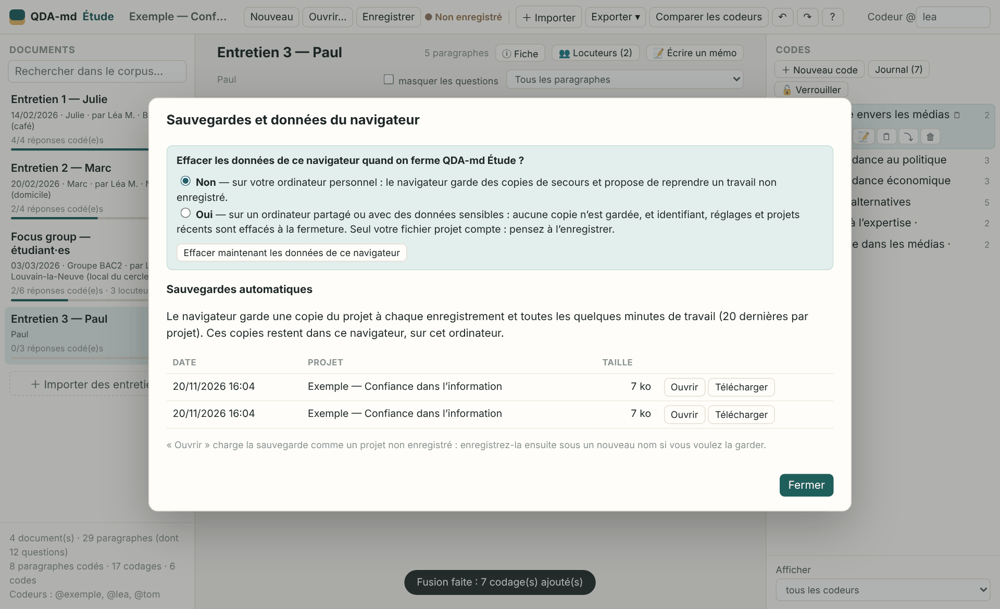

Données et confidentialité¶
Où sont mes données ?¶
- Dans votre fichier projet
.qda.md, à l’endroit où vous l’avez enregistré. C’est la seule version de référence de votre travail. - Nulle part ailleurs sur internet : l’application n’envoie aucune donnée, ne charge aucune ressource extérieure et fonctionne hors ligne.
Les copies gardées par le navigateur¶
Pour éviter les pertes, le navigateur garde aussi :
- une reprise du travail non enregistré (proposée sur la page d’accueil après une fermeture accidentelle) ;
- jusqu’à 20 sauvegardes automatiques par projet, que l’on peut rouvrir ou télécharger ;
- la liste des projets récents, votre identifiant et vos réglages.
Les copies contiennent le texte complet des entretiens. Elles sont enregistrées sur le disque, dans le profil du navigateur, et restent après la fermeture de l’onglet. Les sites web ordinaires n’y ont pas accès, mais d’autres fichiers HTML ouverts depuis l’ordinateur dans le même navigateur pourraient les lire, et toute personne utilisant la même session de l’ordinateur peut les retrouver.
Effacer les données du navigateur à la fermeture¶
La page d’accueil et le menu Exporter › Sauvegardes et données du navigateur… posent la question : « Effacer les données de ce navigateur quand on ferme QDA-md Étude ? »
- Non — sur votre ordinateur personnel : copies de secours et reprise du travail restent disponibles.
- Oui — sur un ordinateur partagé ou avec des données sensibles : les données existantes sont effacées immédiatement, aucune copie n’est plus gardée pendant le travail, et identifiant, réglages et projets récents sont effacés à la fermeture. Seul ce choix lui-même est mémorisé.

Le bouton Effacer maintenant les données de ce navigateur fait le ménage à tout moment. Vos fichiers projet ne sont jamais touchés.
Avec « Oui », seul votre fichier compte
Sans copie de secours, un travail non enregistré est perdu si l’onglet se ferme. Avec Chrome ou Edge, l’enregistrement automatique dans le fichier protège ; avec Firefox ou Safari, enregistrez souvent.
Bonnes pratiques¶
- Anonymisez les retranscriptions avant l’import : pseudos, lieux, détails identifiants.
- Rangez le fichier projet dans un dossier sauvegardé (OneDrive de l’université, par exemple) et faites-en des copies datées aux étapes importantes.
- N’ouvrez pas de fichiers HTML d’origine inconnue dans le navigateur qui vous sert à coder.
- Ouvrez des exports CSV venant d’autres personnes avec prudence dans Excel (une cellule commençant par
=peut contenir une formule). - Ne téléchargez l’application que depuis cette page : une version modifiée qui circulerait entre étudiant·es pourrait, elle, envoyer des données.